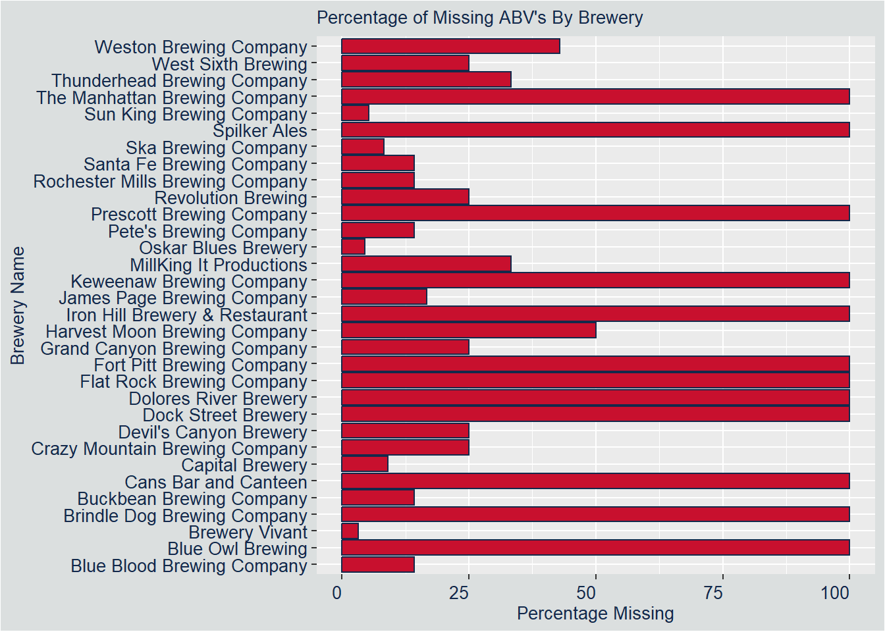

DDS Budweiser Analysis
Anishka Peter and Aaron Abromowitz
2023-07-01
Shiny App
Check out this app that has interactive plots dealing with the data that is below!
Introduction
Hello, my name is Anishka Peter and my partner is Aaron Abromowitz. We were given two datasets about beers and breweries and we are excited to present to you our findings. We first cleaned that data and addressed any missing values. Using that cleaned data, we found various insights such as the beers and breweries by state and style. We will include insights about AVB and IBU as well.
Load Packages
# packages
library(tidyverse)
library(plotly)
library(ggpmisc) # stat_poly_eq
library(patchwork) # combining plots
library(e1071) # knn
library(caret) # knn
library(class) # knn
library(GGally) # ggpairs
library(dplyr)Load Datasets
We are loading in both data sets that we were given.
breweries <- read.csv("https://raw.githubusercontent.com/anishkapeter/DDS_Budweiser_Project/main/Breweries.csv",header=TRUE)
beers <- read.csv("https://raw.githubusercontent.com/anishkapeter/DDS_Budweiser_Project/main/Beers.csv",header=TRUE)Question 1: Breweries by State
We are grouping all the breweries by state and then plotting a bar plot with the counts for the states.
head(breweries)## Brew_ID Name City State
## 1 1 NorthGate Brewing Minneapolis MN
## 2 2 Against the Grain Brewery Louisville KY
## 3 3 Jack's Abby Craft Lagers Framingham MA
## 4 4 Mike Hess Brewing Company San Diego CA
## 5 5 Fort Point Beer Company San Francisco CA
## 6 6 COAST Brewing Company Charleston SCdim(breweries) # 558 4## [1] 558 4breweries_by_state <-
breweries %>%
group_by(State) %>%
summarize(count=n())
breweries_by_state %>% arrange(desc(count)) # Descending## # A tibble: 51 x 2
## State count
## <chr> <int>
## 1 " CO" 47
## 2 " CA" 39
## 3 " MI" 32
## 4 " OR" 29
## 5 " TX" 28
## 6 " PA" 25
## 7 " MA" 23
## 8 " WA" 23
## 9 " IN" 22
## 10 " WI" 20
## # i 41 more rowsbreweries_by_state %>% arrange(count) # Ascending## # A tibble: 51 x 2
## State count
## <chr> <int>
## 1 " DC" 1
## 2 " ND" 1
## 3 " SD" 1
## 4 " WV" 1
## 5 " AR" 2
## 6 " DE" 2
## 7 " MS" 2
## 8 " NV" 2
## 9 " AL" 3
## 10 " KS" 3
## # i 41 more rowsbreweries_by_state %>%
ggplot(aes(x=State, y = count)) +
geom_bar(stat = "Identity", color = "#13294b", fill = "#c8102e") +
geom_text(aes(label = count), vjust = -1) +
ggtitle('Breweries by State') +
ylab("Number of Breweries")+
ylim(0,50) +
theme(plot.background = element_rect("#dbdfdf"),axis.text.x = element_text(angle = 90, vjust = 0.5, hjust=1, color = "#13294b",size = 10),axis.text.y = element_text(color = "#13294b",size = 14), axis.title.x = element_text(color = "#13294b",size = 16), axis.title.y =element_text(color = "#13294b",size = 16), plot.title = element_text(color = "#13294b",size = 18))Question 1 Answer
How many breweries are present in each state?
DC, North Dakota, South Dakota, and West Virginia have 1 brewery, Arkansas, Delaware, Massachusetts, and Nevada have 2 breweries, Alabama, Kansas, New Hampshire, New Jersey, and Tennessee have 3 breweries, Hawaii, Kentucky, Utah, New Mexico, South Carolina, and Wyoming have 4 breweries, Iowa, Idaho, Louisiana, Nebraska, and Rhode Island have 5 breweries, Oklahoma has 6 breweries, Alaska, Georgia, and Maryland have 7 breweries, Connecticut has 8 breweries, Maine, Montana, Missouri have 9 breweries, Vermont has 10 breweries, Arizona has 11 breweries, Minnesota has 12 breweries, Florida, and Ohio have 15 breweries, New York, and Virginia has 16 breweries, Illinois has 18 breweries, North Carolina has 19 breweries, Wisconsin has 20 breweries, Indiana has 22 breweries, Massachusetts and Washington have 23 breweries, Pennsylvania has 25 breweries, Texas has 28 breweries, Oregon has 29 breweries, Michigan has 32 breweries, California has 39 breweries, and Colorado has 47 breweries.
Question 2 Merge Data Together
Merge Beers and Breweries
We merged the beers and breweries data set by the Brewery_id and Brew_ID and printed the first 6 and last 6 of the dataframe.
beers_and_breweries <- merge(x=beers, y=breweries, by.x="Brewery_id", by.y="Brew_ID")
beers_and_breweries <- rename(beers_and_breweries,Brewery_Name="Name.y")
beers_and_breweries <- rename(beers_and_breweries,Beer_Name="Name.x")
# Save off original dataset
beers_and_breweries_original <- beers_and_breweries
head(beers_and_breweries,6)## Brewery_id Beer_Name Beer_ID ABV IBU Style Ounces
## 1 1 Get Together 2692 0.045 50 American IPA 16
## 2 1 Maggie's Leap 2691 0.049 26 Milk / Sweet Stout 16
## 3 1 Wall's End 2690 0.048 19 English Brown Ale 16
## 4 1 Pumpion 2689 0.060 38 Pumpkin Ale 16
## 5 1 Stronghold 2688 0.060 25 American Porter 16
## 6 1 Parapet ESB 2687 0.056 47 Extra Special / Strong Bitter (ESB) 16
## Brewery_Name City State
## 1 NorthGate Brewing Minneapolis MN
## 2 NorthGate Brewing Minneapolis MN
## 3 NorthGate Brewing Minneapolis MN
## 4 NorthGate Brewing Minneapolis MN
## 5 NorthGate Brewing Minneapolis MN
## 6 NorthGate Brewing Minneapolis MNtail(beers_and_breweries,6)## Brewery_id Beer_Name Beer_ID ABV IBU Style Ounces
## 2405 556 Pilsner Ukiah 98 0.055 NA German Pilsener 12
## 2406 557 Heinnieweisse Weissebier 52 0.049 NA Hefeweizen 12
## 2407 557 Snapperhead IPA 51 0.068 NA American IPA 12
## 2408 557 Moo Thunder Stout 50 0.049 NA Milk / Sweet Stout 12
## 2409 557 Porkslap Pale Ale 49 0.043 NA American Pale Ale (APA) 12
## 2410 558 Urban Wilderness Pale Ale 30 0.049 NA English Pale Ale 12
## Brewery_Name City State
## 2405 Ukiah Brewing Company Ukiah CA
## 2406 Butternuts Beer and Ale Garrattsville NY
## 2407 Butternuts Beer and Ale Garrattsville NY
## 2408 Butternuts Beer and Ale Garrattsville NY
## 2409 Butternuts Beer and Ale Garrattsville NY
## 2410 Sleeping Lady Brewing Company Anchorage AKRemove non-beer styles
Some of the beers in the data set, are not considered real beers so we removed them.
beers_and_breweries <- beers_and_breweries[beers_and_breweries$Style != "American Malt Liquor", ] # not a beer
beers_and_breweries <- beers_and_breweries[beers_and_breweries$Style != "Braggot", ] # not a beer
beers_and_breweries <- beers_and_breweries[beers_and_breweries$Style != "Cider", ] # not a beer
beers_and_breweries <- beers_and_breweries[beers_and_breweries$Style != "Mead", ] # not a beer
beers_and_breweries <- beers_and_breweries[beers_and_breweries$Style != "Low Alcohol Beer", ] # not a beer
beers_and_breweries <- beers_and_breweries[beers_and_breweries$Style != "Radler", ] # not a beer
beers_and_breweries <- beers_and_breweries[beers_and_breweries$Style != "Shandy", ] # not a beerCounts for non-beers styles
We created a table that gives the number of observations we have that we did not consider as beers.
malt_liquor <- beers_and_breweries[beers_and_breweries$Style == "American Malt Liquor", ] # not a beer
braggot <- beers_and_breweries[beers_and_breweries$Style == "Braggot", ] # not a beer
cider <- beers_and_breweries[beers_and_breweries$Style == "Cider", ] # not a beer
mead <- beers_and_breweries[beers_and_breweries$Style == "Mead", ] # not a beer
low_alcohol <- beers_and_breweries[beers_and_breweries$Style == "Low Alcohol Beer", ] # not a beer
radler <- beers_and_breweries[beers_and_breweries$Style == "Radler", ] # not a beer
shandy <- beers_and_breweries[beers_and_breweries$Style == "Shandy", ] # not a beer
non_beers <- rbind(malt_liquor,braggot,cider,mead,low_alcohol,radler,shandy)
non_beer_counts <- non_beers %>%
group_by(Style) %>%
summarise(Count=n())Question 3: Address Missing Values
We plotted the percentage of values that are missing for the 3 variables that have missing values.
dim(beers_and_breweries %>% filter(is.na(ABV) & !is.na(IBU)))[1] # No results, ABV is missing only if IBU is missing as well## [1] 0dim(beers_and_breweries %>% filter(Style==''))[1] # 5 results, 2 with ABV and IBU, 3 with neither = 0.2%## [1] 5dim(beers_and_breweries %>% filter(is.na(ABV) & is.na(IBU)))[1] # 62 results / 2359 = 2.6%## [1] 62dim(beers_and_breweries %>% filter(!is.na(ABV) & is.na(IBU)))[1] # 895 results / 2359 = 37.9%## [1] 895# Plot a single bar with missing counts and percentages
Count <- c(5, 62, 895)
Category <- c("Style", "ABV", "IBU")
count_df <- data.frame(Count, Category)
count_df$Percent <- round(count_df$Count / 2359 *100,1)
count_df$Category <- factor(count_df$Category,level=c("IBU", "ABV", "Style" ))
summary(count_df)## Count Category Percent
## Min. : 5.0 IBU :1 Min. : 0.20
## 1st Qu.: 33.5 ABV :1 1st Qu.: 1.40
## Median : 62.0 Style:1 Median : 2.60
## Mean :320.7 Mean :13.57
## 3rd Qu.:478.5 3rd Qu.:20.25
## Max. :895.0 Max. :37.90ggplot(count_df,aes(x=Category, y=Percent)) +
geom_bar(stat="identity",width=.5,position = "Dodge",fill = "#c8102e",color = "#13294b" ) +
xlab("Variable") +
ylab("Percent Missing") +
ggtitle("Percentage of Oberservations Missing By Variable")+
geom_text(aes(label = Percent), vjust = -1) +
ylim(0,40) +
theme(plot.background = element_rect("#dbdfdf"),
axis.text.x = element_text(color = "#13294b",size = 14),
axis.text.y = element_text(color = "#13294b",size = 14),
axis.title.x = element_text(color = "#13294b",size = 16),
axis.title.y =element_text(color = "#13294b",size = 16),
plot.title = element_text(color = "#13294b",size = 18))Add in the Styles
We are imputing style for the 5 missing styles, or removing the entries entirely.
no_missing_style <- beers_and_breweries %>%
filter(Style != '' ) # 2405
missing_style <- beers_and_breweries %>%
filter(Style == '' ) # 5
missing_style <- missing_style[missing_style$Beer_ID != 2210,] # The beer style changes
missing_style$Style[missing_style$Beer_ID == 2527] <- "Märzen / Oktoberfest"
missing_style$Style[missing_style$Beer_ID == 1635] <- "Scottish Ale"
missing_style <- missing_style[missing_style$Beer_ID != 1796,] # It looks like The CROWLER™ is a container, not a beer
missing_style <- missing_style[missing_style$Beer_ID != 1790,] # It looks like CAN'D AID Foundation is a charity, not a beer
beers_and_breweries <- rbind(no_missing_style,missing_style) # 2356
# Merged data frame with filled in Styles but still missing ABV and IBU
head(beers_and_breweries)## Brewery_id Beer_Name Beer_ID ABV IBU Style Ounces
## 1 1 Get Together 2692 0.045 50 American IPA 16
## 2 1 Maggie's Leap 2691 0.049 26 Milk / Sweet Stout 16
## 3 1 Wall's End 2690 0.048 19 English Brown Ale 16
## 4 1 Pumpion 2689 0.060 38 Pumpkin Ale 16
## 5 1 Stronghold 2688 0.060 25 American Porter 16
## 6 1 Parapet ESB 2687 0.056 47 Extra Special / Strong Bitter (ESB) 16
## Brewery_Name City State
## 1 NorthGate Brewing Minneapolis MN
## 2 NorthGate Brewing Minneapolis MN
## 3 NorthGate Brewing Minneapolis MN
## 4 NorthGate Brewing Minneapolis MN
## 5 NorthGate Brewing Minneapolis MN
## 6 NorthGate Brewing Minneapolis MNtail(beers_and_breweries)## Brewery_id Beer_Name Beer_ID ABV IBU Style Ounces
## 2351 557 Snapperhead IPA 51 0.068 NA American IPA 12
## 2352 557 Moo Thunder Stout 50 0.049 NA Milk / Sweet Stout 12
## 2353 557 Porkslap Pale Ale 49 0.043 NA American Pale Ale (APA) 12
## 2354 558 Urban Wilderness Pale Ale 30 0.049 NA English Pale Ale 12
## 2355 67 OktoberFiesta 2527 0.053 27 Märzen / Oktoberfest 12
## 3100 161 Kilt Lifter Scottish-Style Ale 1635 0.060 21 Scottish Ale 12
## Brewery_Name City State
## 2351 Butternuts Beer and Ale Garrattsville NY
## 2352 Butternuts Beer and Ale Garrattsville NY
## 2353 Butternuts Beer and Ale Garrattsville NY
## 2354 Sleeping Lady Brewing Company Anchorage AK
## 2355 Freetail Brewing Company San Antonio TX
## 3100 Four Peaks Brewing Company Tempe AZMissing ABV
We plotted the number of Missing ABV vs number of non-missing abv’s and then looked to see if there is any pattern in the way ABV is missing, by state, by styles, or by breweries. Then we looked at if ABV values are related to the style
## Count of Missing ABV vs Non-Missing ABV
missing_non_missing_abv = data.frame(beers_and_breweries,is.na(beers_and_breweries$ABV))
missing_non_missing_abv %>%
group_by(is.na.beers_and_breweries.ABV.) %>%
summarise(count = n()) %>%
ggplot(aes(x = as.character(is.na.beers_and_breweries.ABV.), y = count)) +
geom_bar(stat = "identity", color = "#13294b", fill = "#c8102e") +
scale_x_discrete(labels=c("Not Missing", "Missing")) +
xlab("Missing vs Not Missing") +
ylab("Count")+
ggtitle("Missing vs Not Missing ABV Values") +
ylim(0,2400)+
geom_text(aes(label = count),vjust = -1,color = "#13294b") +
theme(plot.background = element_rect("#dbdfdf"),
axis.text.x = element_text(color = "#13294b",size = 14),
axis.text.y = element_text(color = "#13294b",size = 14),
axis.title.x = element_text(color = "#13294b",size = 16),
axis.title.y =element_text(color = "#13294b",size = 16),
plot.title = element_text(color = "#13294b",size = 18))
# Plot the percentage of ABVs missing by style
missing_abv <- beers_and_breweries %>%
filter(is.na(ABV))
missing_abv_styles <- missing_abv %>%
group_by(Style) %>%
summarise(count=n())
total_styles <- beers_and_breweries %>%
group_by(Style) %>%
summarise(count=n())
style_missing_abv_comparison <- merge(total_styles,missing_abv_styles,by="Style")
style_missing_abv_comparison <- style_missing_abv_comparison %>% # No styles are missing all, so can extrapolate abv
mutate(per_missing = 100*count.y/count.x)
ggplot(style_missing_abv_comparison,aes(x = Style,y = per_missing)) +
geom_bar(stat = "Identity", fill = "#c8102e", color = "#13294b" ) +
coord_flip() +
ggtitle("Percent of Missing ABV's by Style") +
labs(y = "Percentage Missing") +
theme(plot.background = element_rect("#dbdfdf"),axis.text.x = element_text(angle = 0, vjust = 0.5, hjust=1, color = "#13294b",size = 10),axis.text.y = element_text(color = "#13294b",size = 10), axis.title.x = element_text(color = "#13294b",size = 10), axis.title.y =element_text(color = "#13294b",size = 10), plot.title = element_text(color = "#13294b",size = 10))# Plot missing AVB by Breweries
missing_abv_breweries <- missing_abv %>%
group_by(Brewery_Name) %>%
summarise(count=n())
total_breweries <- beers_and_breweries %>%
group_by(Brewery_Name) %>%
summarise(count=n())
brewery_missing_abv_comparison <- merge(total_breweries,missing_abv_breweries,by="Brewery_Name")
brewery_missing_abv_comparison <- brewery_missing_abv_comparison %>% # Some breweries didn't report abv
mutate(per_missing = 100*count.y/count.x)
ggplot(brewery_missing_abv_comparison,aes(x = Brewery_Name,y = per_missing)) +
geom_bar(stat = "Identity", fill = "#c8102e", color = "#13294b" ) +
coord_flip() +
ggtitle("Percentage of Missing ABV's By Brewery") +
labs(x = "Brewery Name", y = "Percentage Missing") +
theme(plot.background = element_rect("#dbdfdf"),axis.text.x = element_text(angle = 0, vjust = 0.5, hjust=1, color = "#13294b",size = 10),axis.text.y = element_text(color = "#13294b",size = 10), axis.title.x = element_text(color = "#13294b",size = 10), axis.title.y =element_text(color = "#13294b",size = 10), plot.title = element_text(color = "#13294b",size = 10))
# Plot missing AVB by State
missing_abv_states <- missing_abv %>%
group_by(State) %>%
summarise(count=n())
total_states <- beers_and_breweries %>%
group_by(State) %>%
summarise(count=n())
state_missing_abv_comparison <- merge(total_states,missing_abv_states,by="State")
state_missing_abv_comparison <- state_missing_abv_comparison %>%
mutate(per_missing = 100*count.y/count.x)
ggplot(state_missing_abv_comparison,aes(x = State,y = per_missing)) +
geom_bar(stat = "Identity", fill = "#c8102e", color = "#13294b" ) +
coord_flip() +
ggtitle("Percentage of Missing ABV's By State") +
labs(x = "State", y = "Percentage Missing") +
theme(plot.background = element_rect("#dbdfdf"),axis.text.x = element_text(angle = 0, vjust = 0.5, hjust=1, color = "#13294b",size = 14),axis.text.y = element_text(color = "#13294b",size = 10), axis.title.x = element_text(color = "#13294b",size = 10), axis.title.y =element_text(color = "#13294b",size = 10), plot.title = element_text(color = "#13294b",size = 10))# Since ABV is highly based on style, create boxplots of the Popular Styles colored by ABV.
# Do this for the most popular styles to reduce the number of boxplots.
style_counts <- beers_and_breweries %>%
group_by(Style) %>%
summarize(Count = n())
popular_styles <- style_counts$Style[style_counts$Count > 100]
colors = c("#c8102e","#ffffff","#10297b","#b1b3b3","#690E05")
beers_and_breweries_original %>% filter(Style %in% popular_styles) %>%
ggplot(aes(x=ABV,fill=Style)) +
geom_boxplot(color="black") + ggtitle('ABV of Popular Styles') +
theme(plot.background = element_rect("#dbdfdf"),
axis.text.x = element_text(angle = 0, vjust = 0.5, hjust=1, color = "#13294b",size = 10),
axis.text.y = element_blank(),
axis.title.x = element_text(color = "#13294b",size = 10),
axis.title.y =element_text(color = "#13294b",size = 16),
plot.title = element_text(color = "#13294b",size = 18),
axis.ticks.y= element_blank()) +
scale_fill_manual(values = colors)## Warning: Removed 27 rows containing non-finite values (`stat_boxplot()`).
Missing IBU
We are investigating to see if the missing IBUs have any pattern by State, Brewery, or Style. Then we looked at if IBU values are related to the style of beer. It looks like certain Breweries have all their beers missing IBUs, where other breweries have none of their beers missing IBUs.
# Missing IBU by Style
missing_ibu <- beers_and_breweries %>%
filter(is.na(IBU))
missing_ibu_styles <- missing_ibu %>%
group_by(Style) %>%
summarise(count=n())
style_missing_ibu_comparison <- merge(total_styles,missing_ibu_styles,by="Style")
style_missing_ibu_comparison <- style_missing_ibu_comparison %>%
mutate(per_missing = 100*count.y/count.x)
# Missing IBU by Brewery
missing_ibu_breweries <- missing_ibu %>%
group_by(Brewery_Name) %>%
summarise(count=n())
brewery_missing_ibu_comparison <- merge(total_breweries,missing_ibu_breweries,by="Brewery_Name")
brewery_missing_ibu_comparison <- brewery_missing_ibu_comparison %>% # Lots of breweries are missing IBUs
mutate(per_missing = 100*count.y/count.x)
# Missing IBU by State
missing_ibu_states <- missing_ibu %>%
group_by(State) %>%
summarise(count=n())
total_states <- beers_and_breweries %>%
group_by(State) %>%
summarise(count=n())
state_missing_ibu_comparison <- merge(total_states,missing_ibu_states,by="State")
state_missing_ibu_comparison <- state_missing_ibu_comparison %>% # Lots of breweries are missing IBUs
mutate(per_missing = 100*count.y/count.x)
head(state_missing_ibu_comparison)## State count.x count.y per_missing
## 1 AK 25 8 32.00000
## 2 AL 10 1 10.00000
## 3 AR 5 4 80.00000
## 4 AZ 47 23 48.93617
## 5 CA 182 47 25.82418
## 6 CO 260 114 43.84615# CONCLUSION: It does seem to be pretty random which states and styles have missing IBUs, but some breweries are missing all and some are missing none.
# Filtering on the highest counts of styles, then plot to see if they have clear separation for ABV and IBU
style_counts <- beers_and_breweries %>%
group_by(Style) %>%
summarize(Count = n())
popular_styles <- style_counts$Style[style_counts$Count > 100]
medians_by_popular_style <- beers_and_breweries %>%
filter(Style %in% popular_styles) %>%
group_by(Style) %>%
summarize(median_abv=median(ABV),median_ibu=median(IBU))
colors = c("#c8102e","#ffffff","#0039AA","#b1b3b3","#690E05")
beers_and_breweries %>% filter(Style %in% popular_styles) %>%
ggplot(aes(x=ABV,y=IBU,color=Style)) +
geom_point(aes(fill=Style),color = "BLACK", pch = 21,size = 4) + ggtitle('Comparing ABV vs IBU for popular styles') +
theme(plot.background = element_rect("#dbdfdf"),
axis.text.x = element_text(angle = 0, vjust = 0.5, hjust=1, color = "#13294b",size = 10),
axis.text.y = element_text(color = "#13294b",size = 14),
axis.title.x = element_text(color = "#13294b",size = 16),
axis.title.y =element_text(color = "#13294b",size = 16),
plot.title = element_text(color = "#13294b",size = 18),
legend.text = element_text(size=15),
legend.title = element_text(size=15))+
scale_fill_manual(values = colors)## Warning: Removed 348 rows containing missing values (`geom_point()`).# Popular Styles colored by IBU, Boxplot
beers_and_breweries %>% filter(Style %in% popular_styles) %>%
ggplot(aes(x=IBU,fill=Style)) +
geom_boxplot(color="black") + ggtitle('IBU for Popular Styles') +
theme(plot.background = element_rect("#dbdfdf"),
axis.text.x = element_text(angle = 0, vjust = 0.5, hjust=1, color = "#13294b",size = 10),
axis.text.y = element_blank(),
axis.title.x = element_text(color = "#13294b",size = 10),
axis.title.y =element_text(color = "#13294b",size = 16),
plot.title = element_text(color = "#13294b",size = 18),
axis.ticks.y = element_blank(),
legend.text = element_text(size=10),
legend.title = element_text(size=10)) +
scale_fill_manual(values = colors) +
guides(fill = guide_legend(reverse=TRUE))## Warning: Removed 348 rows containing non-finite values (`stat_boxplot()`).#CONCLUSION: The IBU's for each beer style seem to be clusered together, so IBU is based on the Style Impute Missing ABV and IBU Values
Impute Missing Values for ABV
ABVs are MCAR and we decided to impute them with the median ABV of each style because saw that ABV is associated with style.
# Calculate Median ABV by style
missing_abv <- beers_and_breweries %>%
filter(is.na(ABV)) # 60
non_missing_abv <- beers_and_breweries %>%
filter(!is.na(ABV)) # 2348
med_abv_per_style <- non_missing_abv %>% # Looks like low alcohol beer even has a small ABV
group_by(Style) %>%
summarise(med=round(median(ABV),3))
# Impute Missing ABV with Median ABV for Style
missing_abv <- merge(missing_abv,med_abv_per_style,by="Style")
missing_abv$ABV <- missing_abv$med
head(missing_abv)## Style Brewery_id Beer_Name Beer_ID ABV IBU Ounces
## 1 American Amber / Red Ale 64 Boohai Red Ale 940 0.055 NA 12
## 2 American Amber / Red Ale 549 Liquid Amber Ale 64 0.055 NA 12
## 3 American Amber / Red Ale 64 WinterWonderGrass Festival Ale 1163 0.055 NA 12
## 4 American Amber / Red Ale 489 Dock Street Amber Beer (1992) 944 0.055 NA 12
## 5 American Amber / Red Ale 78 Van Dayum! 2488 0.055 NA 12
## 6 American Amber / Red Ale 152 Fort Pitt Ale 2322 0.055 NA 12
## Brewery_Name City State med
## 1 Crazy Mountain Brewing Company Edwards CO 0.055
## 2 Prescott Brewing Company Prescott AZ 0.055
## 3 Crazy Mountain Brewing Company Edwards CO 0.055
## 4 Dock Street Brewery Philadelphia PA 0.055
## 5 Blue Owl Brewing Austin TX 0.055
## 6 Fort Pitt Brewing Company Latrobe PA 0.055missing_abv$med <- NULL
beers_and_breweries <- rbind(missing_abv,non_missing_abv) # 2356
head(beers_and_breweries)## Style Brewery_id Beer_Name Beer_ID ABV IBU Ounces
## 1 American Amber / Red Ale 64 Boohai Red Ale 940 0.055 NA 12
## 2 American Amber / Red Ale 549 Liquid Amber Ale 64 0.055 NA 12
## 3 American Amber / Red Ale 64 WinterWonderGrass Festival Ale 1163 0.055 NA 12
## 4 American Amber / Red Ale 489 Dock Street Amber Beer (1992) 944 0.055 NA 12
## 5 American Amber / Red Ale 78 Van Dayum! 2488 0.055 NA 12
## 6 American Amber / Red Ale 152 Fort Pitt Ale 2322 0.055 NA 12
## Brewery_Name City State
## 1 Crazy Mountain Brewing Company Edwards CO
## 2 Prescott Brewing Company Prescott AZ
## 3 Crazy Mountain Brewing Company Edwards CO
## 4 Dock Street Brewery Philadelphia PA
## 5 Blue Owl Brewing Austin TX
## 6 Fort Pitt Brewing Company Latrobe PAImpute Missing IBU
IBUs are MAR when we checked by state, brewery and style and we observed that each style has a small range of IBU so we are imputing the missing IBU’s with the median IBU value. Some IBUs had all their values missing, so we looked those up in a Beer Style Guide.
# Since some styles are missing all of their IBUs, we'll need to separate those out and look up those values in a Beer Style Guide
missing_ibu <- beers_and_breweries %>%
filter(is.na(IBU)) # 1003
non_missing_ibu <- beers_and_breweries %>%
filter(!is.na(IBU)) # 1405, wow not much more than half, mean IBU is 43
missing_ibu_styles <- missing_ibu %>%
group_by(Style) %>%
summarise(count=n())
total_styles <- beers_and_breweries %>%
group_by(Style) %>%
summarise(count=n())
style_missing_ibu_comparison <- merge(total_styles,missing_ibu_styles,by="Style")
style_missing_ibu_comparison <- style_missing_ibu_comparison %>%
mutate(per_missing = 100*count.y/count.x)
styles_no_ibus <- style_missing_ibu_comparison$Style[style_missing_ibu_comparison$per_missing == 100]
missing_ibu_all_styles <- missing_ibu[missing_ibu$Style %in% styles_no_ibus,]
# Adding in IBUs for styles with no IBU values
missing_ibu_all_styles$IBU[missing_ibu_all_styles$Style == "Flanders Red Ale"] <- 20
missing_ibu_all_styles$IBU[missing_ibu_all_styles$Style == "Kristalweizen"] <- 13
missing_ibu_all_styles$IBU[missing_ibu_all_styles$Style == "Rauchbier"] <- 25
styles_with_ibus <- style_missing_ibu_comparison$Style[style_missing_ibu_comparison$per_missing != 100]
to_predict_ibus <- missing_ibu[missing_ibu$Style %in% styles_with_ibus,]
med_ibu_per_style <- non_missing_ibu %>% # Looks like low alcohol beer even has a small ABV
group_by(Style) %>%
summarise(med=round(median(IBU),0))
to_predict_ibus <- merge(to_predict_ibus,med_ibu_per_style,by="Style")
to_predict_ibus$IBU <- to_predict_ibus$med
to_predict_ibus$med <- NULL
beers_and_breweries <- rbind(non_missing_ibu,missing_ibu_all_styles,to_predict_ibus) # 2356Question 4: Median alcohol content and international bitterness unit for each state
We grouped the IBU and ABV by state and computed the medians. Then plotted the median ABV by state and median IBU by state
medians_by_state <- beers_and_breweries %>%
group_by(State) %>%
summarise(median_abv=median(ABV),median_ibu=median(IBU))
mean_abv = mean(medians_by_state$median_abv)
mean_ibu = mean(medians_by_state$median_ibu)
median_abv_by_state <- beers_and_breweries %>%
group_by(State) %>%
summarise(Median=median(ABV))
plot1 <- ggplot(medians_by_state,aes(x = State, y = median_abv)) +
geom_bar(stat = "Identity", color = "#13294b", fill = "#c8102e") +
labs(x = "State", y = "Median ABV", title = "Median ABV by State") +
ylim(0,0.08) +
theme(plot.background = element_rect("#dbdfdf"),axis.text.x = element_text(angle = 90, vjust = 0.5, hjust=1, color = "#13294b",size = 10),axis.text.y = element_text(color = "#13294b",size = 14), axis.title.x = element_text(color = "#13294b",size = 16), axis.title.y =element_text(color = "#13294b",size = 16), plot.title = element_text(color = "#13294b",size = 18))
plot2 <- ggplot(medians_by_state,aes(x = State, y = median_ibu)) +
geom_bar(stat= "Identity", fill = "#13294b", color = "#c8102e") +
labs(x = "State", y = "Median IBU", title = "Median IBU by State") +
ylim(0,75) +
theme(plot.background = element_rect("#dbdfdf"),axis.text.x = element_text(angle = 90, vjust = 0.5, hjust=1, color = "#13294b",size = 10),axis.text.y = element_text(color = "#13294b",size = 14), axis.title.x = element_text(color = "#13294b",size = 16), axis.title.y =element_text(color = "#13294b",size = 16), plot.title = element_text(color = "#13294b",size = 18))
combined_plot <- plot1 / plot2 + plot_layout(ncol = 1)
print(combined_plot)
Question 4 Answer
The median ABV for states is all around the same value with minimal variation between states except for Utah which is much lower than all the other states. The median IBU’s by state has much more variability depending on the state
Question 5: Max ABV and Max IBU
We found the max ABV and IBU value. Then we plotted on a bar graph the states with the 10 highest IBU scores and the 10 highest ABV value.
max_abv_state <- beers_and_breweries$State[beers_and_breweries$ABV == max(beers_and_breweries$ABV)]
max_ibu_state <- beers_and_breweries$State[beers_and_breweries$IBU == max(beers_and_breweries$IBU)]
max_ibu_by_state <-beers_and_breweries %>%
group_by(State)%>%
summarise(maxibu = max(IBU))%>%
arrange(desc(maxibu))
max_abv_by_state <-beers_and_breweries %>%
group_by(State)%>%
summarise(maxabv = max(ABV)) %>%
arrange(desc(maxabv))
max_abv_by_state$State = factor(max_abv_by_state$State)
max_abv_by_state$State <- factor(max_abv_by_state$State,levels=names(sort(table(max_abv_by_state$State), decreasing=TRUE)))
plot1 <- head(max_abv_by_state, n = 10) %>%
ggplot(aes(x = reorder(State , -maxabv), y = maxabv)) +
geom_bar(stat = "Identity", color = "#13294b", fill = "#c8102e") +
labs(x = "State", y = "Maximum ABV", title = "Top 10 States with Maximum ABV") +
ylim(0,.15) +
geom_text(aes(label = maxabv),vjust = -1,size = 4) +
theme(plot.background = element_rect("#dbdfdf"),axis.text.x = element_text(angle = 90, vjust = 0.5, hjust=1, color = "#13294b",size = 14),axis.text.y = element_text(color = "#13294b",size = 14), axis.title.x = element_text(color = "#13294b",size = 16), axis.title.y =element_text(color = "#13294b",size = 16), plot.title = element_text(color = "#13294b",size = 18))
plot2 <- head(max_ibu_by_state, n = 10) %>%
ggplot(aes(x = reorder(State, -maxibu), y = maxibu)) +
geom_bar(stat= "Identity", fill = "#13294b", color = "#c8102e") +
labs(x = "State", y = "Maximum IBU", title = "Top 10 States with Maximum IBU") +
ylim(0,160) +
geom_text(aes(label = maxibu),vjust = -1) +
theme(plot.background = element_rect("#dbdfdf"),axis.text.x = element_text(angle = 90, vjust = 0.5, hjust=1, color = "#13294b",size = 14),axis.text.y = element_text(color = "#13294b",size = 14), axis.title.x = element_text(color = "#13294b",size = 16), axis.title.y =element_text(color = "#13294b",size = 16), plot.title = element_text(color = "#13294b",size = 18))
combined_plot <- plot1 / plot2 + plot_layout(ncol = 1)
print(combined_plot)Question 5 Answer
The maximum ABV is 0.128 from Colorado, Lee Hill Series Vol. 5 - Belgian Style Quadrupel Ale. The maximum IBU is in Orgeon with a score of 138, Bitter Bitch Imperial IPA.
Question 6: Summary Statistics and Distribution of ABV
We found the summary statistics of the ABV values and then plotted a density plot and boxplot for ABV’s distribution.
summary(beers_and_breweries$ABV) ## Min. 1st Qu. Median Mean 3rd Qu. Max.
## 0.02700 0.05000 0.05600 0.05973 0.06700 0.12800# Min. 1st Qu. Median Mean 3rd Qu. Max.
# 0.02700 0.05000 0.05600 0.05973 0.06700 0.12800
# Density Plot for Overall ABV
ggplot(beers_and_breweries,aes(x = ABV)) +
geom_density(fill = "#c8102e", color = "#13294b") +
ggtitle("Density of ABV") +
theme(plot.background = element_rect("#dbdfdf"),axis.text.x = element_text(angle = 90, vjust = 0.5, hjust=1, color = "#13294b",size = 14),axis.text.y = element_text(color = "#13294b",size = 14), axis.title.x = element_text(color = "#13294b",size = 16), axis.title.y =element_text(color = "#13294b",size = 16), plot.title = element_text(color = "#13294b",size = 18))# ABV Box Plot
ggplot(beers_and_breweries,aes(x = ABV)) +
geom_boxplot(fill = "#c8102e", color = "#13294b") +
ggtitle("Boxplot of ABV") +
coord_flip()+
theme(plot.background = element_rect("#dbdfdf"),
axis.text.x = element_blank(),
axis.text.y = element_text(color = "#13294b",size = 14),
axis.title.x = element_text(color = "#13294b",size = 16),
axis.title.y =element_text(color = "#13294b",size = 16),
plot.title = element_text(color = "#13294b",size = 18),
axis.ticks.x = element_blank())Question 6 Answer
The minimum ABV is an American IPA with an ABV of 0.027, the median ABV is 0.056, the maximum ABV is a Quadruple with an ABV of 0.128. The mean ABV is 0.05973 and the Upper Quantile is 0.067 and the lower quantile is 0.05.
Question 7: IBU vs ABV
We plotted a scatter plot of IBU vs ABV values
## scatter plot with linear regression on data with imputed values
beers_and_breweries %>% ggplot(aes(x = ABV, y = IBU)) +
geom_smooth(method='lm', color = "#13294b") +
geom_point(color = "#c8102e", size = 2) +
ggtitle("IBU vs ABV") +
theme(plot.background = element_rect("#dbdfdf"),axis.text.x = element_text(angle = 0, vjust = 0.5, hjust=1, color = "#13294b",size = 14),axis.text.y = element_text(color = "#13294b",size = 14), axis.title.x = element_text(color = "#13294b",size = 16), axis.title.y =element_text(color = "#13294b",size = 16), plot.title = element_text(color = "#13294b",size = 18))## `geom_smooth()` using formula = 'y ~ x'\[IBU = -23.1 + 1.07*10^3ABV\] \[R^2 = 0.35\]
Question 7 Answer
We can see that with an increase in ABV values, there is an estimated increase in IBU values but we can see as ABV increases, the variability in IBU’s increases so the positive correlation between the 2 variables in not strong.
Question 8: KNN Classification Ales vs IPA
Organize IPA vs Ale
The beers were categorized as IPAs, Ales, or neither. We determined IPA styles and Ale styles by looking at the data. These lists of styles were then refined using ChatGPT as well as investigation of styles in the Beer Style Guide. Some styles were considered to be either, and then we let if the name of the beer had the word “Ale” in it to decide.
IPA_Styles <- unique(beers_and_breweries$Style[which(grepl("IPA",beers_and_breweries$Style) |
grepl("india pale ale",beers_and_breweries$Style,ignore.case = T) |
grepl("IPA",beers_and_breweries$Beer_Name) |
grepl("india pale ale",beers_and_breweries$Beer_Name,ignore.case = T))])
beers_and_breweries[beers_and_breweries$Style == "Scottish Ale" & grepl("IPA",beers_and_breweries$Beer_Name), ] # Doesn't seem like an IPA## Style Brewery_id Beer_Name Beer_ID ABV IBU Ounces Brewery_Name
## 1659 Scottish Ale 336 Stone's Throw IPA 1435 0.045 19 12 Fargo Brewing Company
## City State
## 1659 Fargo NDbeers_and_breweries[beers_and_breweries$Style == "American Black Ale" & grepl("IPA",beers_and_breweries$Beer_Name), ] # Also called Black IPA, so I'd consider an IPA## Style Brewery_id Beer_Name Beer_ID ABV IBU
## 920 American Black Ale 157 Mothman Black IPA 2313 0.067 71
## 1129 American Black Ale 193 Dark Voyage Black IPA (2013) 2227 0.065 80
## 1918 American Black Ale 393 Black IPA 967 0.071 95
## 1934 American Black Ale 398 CAPT Black IPA 1478 0.073 55
## 1936 American Black Ale 398 CAPT Black IPA 883 0.073 55
## 1989 American Black Ale 420 Sanitas Black IPA 1391 0.068 65
## 2258 American Black Ale 516 Eclipse Black IPA 556 0.077 71
## 84 American Black Ale 131 Black Hop IPA 2368 0.068 73
## 93 American Black Ale 414 Heavy Machinery IPA Series #1: Heavy Fist 1409 0.070 73
## 94 American Black Ale 207 Next Adventure Black IPA 1566 0.062 73
## 96 American Black Ale 315 Masked Bandit IPA 1540 0.070 73
## Ounces Brewery_Name City State
## 920 12 Greenbrier Valley Brewing Company Lewisburg WV
## 1129 12 Capital Brewery Middleton WI
## 1918 12 Santa Fe Brewing Company Santa Fe NM
## 1934 12 Ruhstaller Beer Company Sacramento CA
## 1936 16 Ruhstaller Beer Company Sacramento CA
## 1989 12 Sanitas Brewing Company Boulder CO
## 2258 16 Crabtree Brewing Company Greeley CO
## 84 12 Shebeen Brewing Company Wolcott CT
## 93 16 Austin Beerworks Austin TX
## 94 16 Fort George Brewery Astoria OR
## 96 16 Piney River Brewing Company Bucryus MOIPA_Styles <- IPA_Styles[IPA_Styles != "Scottish Ale"]
IPA_Beers <- beers_and_breweries[beers_and_breweries$Style %in% IPA_Styles,] # 627
Ale_Styles <- unique(beers_and_breweries$Style[which(grepl(" ale",beers_and_breweries$Style,ignore.case = T) |
grepl(" ale",beers_and_breweries$Beer_Name,ignore.case = T))])
Ale_Styles<- Ale_Styles[!(Ale_Styles %in% IPA_Styles)]
beers_and_breweries[beers_and_breweries$Style == "California Common / Steam Beer" & grepl("ale",beers_and_breweries$Beer_Name,ignore.case = T), ] # says it's an ale## Style Brewery_id Beer_Name Beer_ID
## 6351 California Common / Steam Beer 221 West Portal Colorado Common Summer Ale 1422
## ABV IBU Ounces Brewery_Name City State
## 6351 0.041 41 16 Big Choice Brewing Broomfield COAle_Styles <- Ale_Styles[Ale_Styles != "California Common / Steam Beer"] # This uses lager yeast
beers_and_breweries[beers_and_breweries$Style == "American India Pale Lager" & grepl("ale",beers_and_breweries$Beer_Name,ignore.case = T), ] # Ha, has the word "pale"## [1] Style Brewery_id Beer_Name Beer_ID ABV IBU Ounces
## [8] Brewery_Name City State
## <0 rows> (or 0-length row.names)Ale_Styles <- Ale_Styles[Ale_Styles != "American India Pale Lager"] # Isn't an ale
Ale_Styles <- Ale_Styles[Ale_Styles != "American Pale Lager"] # Isn't an ale
Ale_Styles <- Ale_Styles[Ale_Styles != "Herbed / Spiced Beer"] # Can be either
Ale_Styles <- Ale_Styles[Ale_Styles != "American Amber / Red Lager"] # Can be either
Ale_Styles <- Ale_Styles[Ale_Styles != "Euro Pale Lager"] # Isn't an ale
Ale_Styles <- Ale_Styles[Ale_Styles != "Other"] # Can be either
beers_and_breweries[beers_and_breweries$Style == "Chile Beer",] # beer with chilis## Style Brewery_id Beer_Name Beer_ID ABV IBU Ounces
## 790 Chile Beer 133 L'il Lucy's Hot Pepper Ale 2341 0.049 28 12
## 1592 Chile Beer 315 Hot Date Ale 1791 0.060 20 16
## 6361 Chile Beer 425 Patty's Chile Beer 1345 0.042 24 12
## Brewery_Name City State
## 790 Weston Brewing Company Weston MO
## 1592 Piney River Brewing Company Bucryus MO
## 6361 Wynkoop Brewing Company Denver COAle_Styles <- Ale_Styles[Ale_Styles != "Chile Beer"] # Can be either
Ale_Styles <- Ale_Styles[Ale_Styles != "Fruit / Vegetable Beer"] # Can be either
Ale_Styles <- Ale_Styles[Ale_Styles != "Baltic Porter"] # Even though porters are Ales, a Baltic Porter is a Lager, good catch by Chat GPT
unique(beers_and_breweries$Style[grepl("stout",beers_and_breweries$Style,ignore.case = T)]) # Seems stouts are missing## [1] "Milk / Sweet Stout" "Russian Imperial Stout"
## [3] "American Stout" "Foreign / Export Stout"
## [5] "Oatmeal Stout" "Irish Dry Stout"
## [7] "American Double / Imperial Stout" "English Stout"Ale_Styles <- c(Ale_Styles, "Milk / Sweet Stout", "Russian Imperial Stout", "American Stout", "Foreign / Export Stout",
"Oatmeal Stout", "Irish Dry Stout", "American Double / Imperial Stout", "English Stout")
Ale_Styles <- c(Ale_Styles, "Dubbel", "Tripel", "Flanders Oud Bruin", "Kristalweizen",
"Berliner Weissbier", "Bière de Garde", "Dunkelweizen", "Grisette", "Roggenbier")
Ale_Styles <- Ale_Styles[Ale_Styles != "Rye Beer"] # Can be either
Ale_Styles <- Ale_Styles[Ale_Styles != "American Pilsner"] # pilsners are lagers
Ale_Beers <- beers_and_breweries[beers_and_breweries$Style %in% Ale_Styles |
(grepl(" ale",beers_and_breweries$Beer_Name,ignore.case = T) &
!(beers_and_breweries$Style %in% IPA_Styles)),] # 1243
IPA_Beers$IPA_or_Ale <- "IPA"
Ale_Beers$IPA_or_Ale <- "Ale"
# Dataframe With IPA vs Ale Distinction
IPAs_and_Ales <- rbind(IPA_Beers,Ale_Beers)
# The above approach was pretty manual.
# Is it possible to pass in a list of styles to ChatGPT and have it give you list of IPAs, Ales, neither, sometimes an Ale and sometimes neither.
all_styles <- beers_and_breweries %>%
group_by(Style) %>%
summarize(Count=n())
all_styles## # A tibble: 93 x 2
## Style Count
## <chr> <int>
## 1 Abbey Single Ale 2
## 2 Altbier 13
## 3 American Adjunct Lager 18
## 4 American Amber / Red Ale 133
## 5 American Amber / Red Lager 29
## 6 American Barleywine 3
## 7 American Black Ale 36
## 8 American Blonde Ale 108
## 9 American Brown Ale 70
## 10 American Dark Wheat Ale 7
## # i 83 more rows# Conversation is saved as a .txt file, it was somewhat helpful but not foolproof
# Plot the counts of IPA vs Ale vs Neither
Count <- c(607, 1285, 464)
Category <- c("IPA", "Ale", "Neither")
count_df <- data.frame(Count, Category)
count_df$Percent <- round(count_df$Count / 2356 *100,1)
count_df$Category <- factor(count_df$Category,level=c("IPA", "Ale", "Neither"))
summary(count_df)## Count Category Percent
## Min. : 464.0 IPA :1 Min. :19.70
## 1st Qu.: 535.5 Ale :1 1st Qu.:22.75
## Median : 607.0 Neither:1 Median :25.80
## Mean : 785.3 Mean :33.33
## 3rd Qu.: 946.0 3rd Qu.:40.15
## Max. :1285.0 Max. :54.50ggplot(count_df,aes(x=Category, y=Percent)) +
geom_bar(stat="identity",width=.5,position = "Dodge",fill = "#c8102e",color = "#13294b" ) +
xlab("Type") +
ylab("Percent") +
ggtitle("Percentage of Beers as IPA vs Ale")+
geom_text(aes(label = Percent), vjust = -1) +
ylim(0,60) +
theme(plot.background = element_rect("#dbdfdf"),
axis.text.x = element_text(color = "#13294b",size = 14),
axis.text.y = element_text(color = "#13294b",size = 14),
axis.title.x = element_text(color = "#13294b",size = 16),
axis.title.y =element_text(color = "#13294b",size = 16),
plot.title = element_text(color = "#13294b",size = 18))Plots of ABV and IBU by Classification
Plot to see if there is a visual distinction between IBU and/or ABV by IPA vs Ale. There is a clear distinction for IBU, and a less clear distinction for ABV.
# Check if any overlaps, there shouldn't be
merge(IPA_Beers,Ale_Beers,by="Beer_ID") # 0 rows## [1] Beer_ID Style.x Brewery_id.x Beer_Name.x ABV.x IBU.x
## [7] Ounces.x Brewery_Name.x City.x State.x IPA_or_Ale.x Style.y
## [13] Brewery_id.y Beer_Name.y ABV.y IBU.y Ounces.y Brewery_Name.y
## [19] City.y State.y IPA_or_Ale.y
## <0 rows> (or 0-length row.names)colors = c("#c8102e","#13294b")
# ABV vs IBU by Classification Scatterplot
IPAs_and_Ales %>% # Looks like IPAs have higher IBUs
ggplot(aes(x=ABV,y=IBU,fill=IPA_or_Ale)) +
geom_point(color = "BLACK", pch = 21, size = 3, position = "jitter") +
ggtitle('ABV vs IBU by Classification') +
theme(plot.background = element_rect("#dbdfdf"),
axis.text.x = element_text(angle = 0, vjust = 0.5, hjust=1, color = "#13294b",size = 10),
axis.text.y = element_text(color = "#13294b",size = 14),
axis.title.x = element_text(color = "#13294b",size = 16),
axis.title.y =element_text(color = "#13294b",size = 16),
plot.title = element_text(color = "#13294b",size = 18),
legend.text = element_text(color = "#13294b",size=15),
legend.title = element_text(color = "#13294b",size=15)) +
scale_fill_manual(values = colors, name = "Classification") KNN Predictor
We ran 100 train test splits and plotted histograms of the specificity, sensitivity, and accuracy of all of the splits.
# First, try with just K = 5 for 100 train and test splits 70 30 split
num_seeds <- 100
accuracies <- numeric(num_seeds)
sensitivies <- numeric(num_seeds)
specificities <- numeric(num_seeds)
for (seed in 1:100){
set.seed(seed)
trainIndices = sample(seq(1:length(IPAs_and_Ales$IPA_or_Ale)),round(.7*length(IPAs_and_Ales$IPA_or_Ale)))
train = IPAs_and_Ales[trainIndices,]
test = IPAs_and_Ales[-trainIndices,]
classifications = knn(train[,c("ABV","IBU")],
test[,c("ABV","IBU")],
train$IPA_or_Ale, prob = TRUE, k = 5)
CM = confusionMatrix(table(test$IPA_or_Ale,classifications))
accuracies[seed] = CM$overall[1]
sensitivies[seed] = CM$byClass[1]
specificities[seed] = CM$byClass[2]
}
# Accuracy histogram for all the Test Train Splits
ggplot(data.frame(accuracies), aes(x = accuracies)) +
geom_histogram(fill = "#c8102e", color = "#13294b") +
xlab("Accuracy") +
ylab("Count")+
ggtitle("Accuracies of KNN Classifier on Test Data") +
theme(plot.background = element_rect("#dbdfdf"),
axis.text.x = element_text(color = "#13294b",size = 10),
axis.text.y = element_text(color = "#13294b",size = 14),
axis.title.x = element_text(color = "#13294b",size = 16),
axis.title.y =element_text(color = "#13294b",size = 16),
plot.title = element_text(color = "#13294b",size = 18))+
scale_x_continuous(breaks = scales::pretty_breaks(n = 20))## `stat_bin()` using `bins = 30`. Pick better value with `binwidth`.
min(accuracies) # 86.3%, really good minimum accuracy## [1] 0.8849558max(accuracies) # 92.1%## [1] 0.9433628# Sensitivies histogram for all the Test Train Splits
ggplot(data.frame(sensitivies), aes(x = sensitivies)) +
geom_histogram(fill = "#c8102e", color = "#13294b") +
xlab("Sensitivity") +
ylab("Count")+
ggtitle("Sensitivities of KNN Classifier on Test Data") +
theme(plot.background = element_rect("#dbdfdf"),
axis.text.x = element_text(color = "#13294b",size = 10),
axis.text.y = element_text(color = "#13294b",size = 14),
axis.title.x = element_text(color = "#13294b",size = 16),
axis.title.y =element_text(color = "#13294b",size = 16),
plot.title = element_text(color = "#13294b",size = 18))+
scale_x_continuous(breaks = scales::pretty_breaks(n = 20))## `stat_bin()` using `bins = 30`. Pick better value with `binwidth`.min(sensitivies) # 89.2%, really good minimum accuracy## [1] 0.8808933max(sensitivies) # 95.1%## [1] 0.9572864# Specificities histogram for all the Test Train Splits
ggplot(data.frame(specificities), aes(x = specificities)) +
geom_histogram(fill = "#c8102e", color = "#13294b") +
xlab("Specificity") +
ylab("Count")+
ggtitle("Specificities of KNN Classifier on Test Data") +
theme(plot.background = element_rect("#dbdfdf"),
axis.text.x = element_text(color = "#13294b",size = 10),
axis.text.y = element_text(color = "#13294b",size = 14),
axis.title.x = element_text(color = "#13294b",size = 16),
axis.title.y =element_text(color = "#13294b",size = 16),
plot.title = element_text(color = "#13294b",size = 18))+
scale_x_continuous(breaks = scales::pretty_breaks(n = 15))## `stat_bin()` using `bins = 30`. Pick better value with `binwidth`.min(specificities) # 79.7%, not as good, but still not bad## [1] 0.8287293max(specificities) # 90.6%## [1] 0.9349112Quesiton 8 Answer
KNN is a good classification model for determining if a beer is an Ale or an IPA because after running 100 different train and test splits we got an accuracy between 86.3% and 92.1%, sensitivity between 89.2% and 95.1%, and specificity between 79.7% and 90.6%.
Question 9: Other Investigation
Densities for 5 most populare styles and states
We plotted the densities of the 5 most popular styles and states to see how they compared to the overall density.
# Plotting the densities for the top 5 most popular beer styles
style_counts <- beers_and_breweries %>%
group_by(Style) %>%
summarize(Count = n())
popular_styles <- style_counts$Style[style_counts$Count > 100]
ggplot(beers_and_breweries[beers_and_breweries$Style %in% popular_styles,],aes(x = ABV)) +
geom_density(fill = "#c8102e", color = "#13294b") +
ggtitle("Density of ABV for 5 most Popular Styles") +
facet_wrap(~Style,ncol=1) +
ylab("Density")+
theme(plot.background = element_rect("#dbdfdf"),axis.text.x = element_text(color = "#13294b",size = 10),axis.text.y = element_text(color = "#13294b",size = 10), axis.title.x = element_text(color = "#13294b",size = 16), axis.title.y =element_text(color = "#13294b",size = 16), plot.title = element_text(color = "#13294b",size = 18))# Plotting the densities for the top 5 most popular states
state_counts <- beers_and_breweries %>%
group_by(State) %>%
summarize(Count = n()) %>%
arrange(desc(Count))
popular_states <- state_counts$State[state_counts$Count > 125]
ggplot(beers_and_breweries[beers_and_breweries$State %in% popular_states,],aes(x = ABV)) +
geom_density(fill = "#c8102e", color = "#13294b") +
ggtitle("Top 5 States Density of ABV") +
ylab("Density")+
facet_wrap(~State,ncol=1) +
theme(plot.background = element_rect("#dbdfdf"),axis.text.x = element_text(color = "#13294b",size = 10),axis.text.y = element_text(color = "#13294b",size = 8), axis.title.x = element_text(color = "#13294b",size = 16), axis.title.y =element_text(color = "#13294b",size = 16), plot.title = element_text(color = "#13294b",size = 18))Popular styles in Colorado
We created a bar plot of the most popular beers in Colorado. Since this was the state with the most beers, we thought it would be useful for Budweiser to know the style breakdown there so that they know what types of beers to market in a location where beer is the most popular. It turned out to be similar to the country as a whole.
# popular styles of beer in Colorado Bar Plot
beers_and_breweries %>%
group_by(Style) %>%
filter(State == " CO") %>%
summarise(count = n()) %>%
arrange(desc(count)) %>%
filter(count > 10) %>%
ggplot(aes(x = Style,y = count)) +
geom_bar(stat = "Identity",fill = "#c8102e",color = "#13294b") +
xlab("Style") +
ylab("Count") +
ylim(0,45) +
ggtitle("Popular Styles in Colorado")+
geom_text(aes(label = count), vjust = -1) +
theme(plot.background = element_rect("#dbdfdf"),
axis.text.x = element_text(color = "#13294b",size = 12),
axis.text.y = element_text(color = "#13294b",size = 14),
axis.title.x = element_text(color = "#13294b",size = 16),
axis.title.y =element_text(color = "#13294b",size = 16),
plot.title = element_text(color = "#13294b",size = 18))Extra Analysis
See if Median ABV by Style vs Median IBU by Style has a higher Correlation Coefficient
The correlation coefficient between ABV and IBU was only 0.35 for all the data. However, looking at the top 5 most popular styles, it seemed to have a much stronger correlation. We investigated if this correlation could be determined by looking at median values or by filtering on more popular styles.
# See if Median ABV by Style vs Median IBU by Style has more of a pattern
medians_by_style <- beers_and_breweries %>%
group_by(Style) %>%
summarise(median_abv=median(ABV),median_ibu=median(IBU),style_count=n())
medians_by_style %>% # R^2 is still only 0.44, so not much correlation here either
ggplot(aes(x=median_abv,y=median_ibu)) +
geom_point() +
geom_smooth(method='lm') +
stat_poly_eq(aes(label = paste(..eq.label.., ..rr.label.., sep = "~~~")),
formula = y ~ x, parse = TRUE)## `geom_smooth()` using formula = 'y ~ x'medians_by_style %>% # R^2 jumps up when you remove styles without much representation
filter(style_count>40) %>%
ggplot(aes(x=median_abv,y=median_ibu)) +
geom_point() +
geom_smooth(method='lm') +
stat_poly_eq(aes(label = paste(..eq.label.., ..rr.label.., sep = "~~~")),
formula = y ~ x, parse = TRUE)## `geom_smooth()` using formula = 'y ~ x'# What about all the data for the most popular styles (not just the medians), is there a high correlation?
style_counts <- beers_and_breweries %>%
group_by(Style) %>%
summarize(Count = n())
popular_styles <- style_counts$Style[style_counts$Count > 100]
beers_and_breweries_original %>% filter(Style %in% popular_styles) %>% # R^2 is 0.58, not super high
ggplot(aes(x=ABV,y=IBU))+
geom_point()+
geom_smooth(method='lm') +
stat_poly_eq(aes(label = paste(..eq.label.., ..rr.label.., sep = "~~~")),
formula = y ~ x, parse = TRUE)## `geom_smooth()` using formula = 'y ~ x'## Warning: Removed 348 rows containing non-finite values (`stat_smooth()`).## Warning: Removed 348 rows containing non-finite values (`stat_poly_eq()`).## Warning: Removed 348 rows containing missing values (`geom_point()`).It does seem that the correlation becomes higher if you remove non-popular styles (styles with a count less than 40). It jumps even higher if you only look at the median ABV vs median IBU, instead of looking at values for each individual beer.
Investigate the bottom right of the ABV vs IBU plot
It seems that the bottom right of the ABV vs IBU plot, ABV is high but IBU is low, is dragging down the average line and lowering the correlation coefficient. We investigated these values, and determined that there are several styles that are high ABV but low IBU. None of these styles are very popular, but several styles fall into this category.
# Use plotly to look at the bottom right hand part of ABV vs IBU plot
summary(beers_and_breweries$ABV) # Median = 0.056, 3rd Quartile = 0.067## Min. 1st Qu. Median Mean 3rd Qu. Max.
## 0.02700 0.05000 0.05600 0.05973 0.06700 0.12800summary(beers_and_breweries$IBU) # Median = 32, 1st Quartile = 21## Min. 1st Qu. Median Mean 3rd Qu. Max.
## 4.00 21.00 32.00 40.52 60.00 138.00plot <- plot_ly(data = medians_by_style, x = ~median_abv, y = ~median_ibu,
text = ~paste("Style: ", Style, ", Count: ",style_count),
mode = "markers")
print(plot)## No trace type specified:
## Based on info supplied, a 'scatter' trace seems appropriate.
## Read more about this trace type -> https://plotly.com/r/reference/#scatterhigh_abv_low_ibu <- medians_by_style %>%
filter(median_abv > 0.06 & median_ibu < 30 & style_count > 2)
sum(high_abv_low_ibu$style_count) # 89`## [1] 89# CONCLUSION: There are several high profile styles that fit this category
# Bocks, Belgian Strongs (Strong Ales in general), and Winter Ales
# Look at the .1 ABV level, since there are a lot of beers there.
# Are there common Styles and States that do this?
plot <- plot_ly(data = beers_and_breweries, x = ~ABV, y = ~IBU, text = ~paste("Beer Name: ", Beer_Name, ", Style: ",Style, ", State: ", State), mode = "markers")
print(plot)## No trace type specified:
## Based on info supplied, a 'scatter' trace seems appropriate.
## Read more about this trace type -> https://plotly.com/r/reference/#scatterten_alc_beers <- beers_and_breweries %>%
filter(ABV==0.099)
# CONCLUSION: No real common states, Total = 34
# IPAs = 12, Stouts = 9, Barleywines = 5, Belgian Strongs = 4Conclusion
First we cleaned the data to remove non-beers and to add missing Style, ABV, and IBU values. We displayed the breweries by state and found that Colorado had the most breweries. We found each states median ABV and IBU and the maximum ABV and IBU values in the nation. We looked at various summary statistics of ABV for the nation, states with the most beer, and top styles. Then we found that there is a weak positive correlation between IBU and ABV and that these 2 variables can be used to classify beers as an Ale vs an IPA.